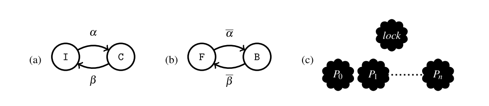
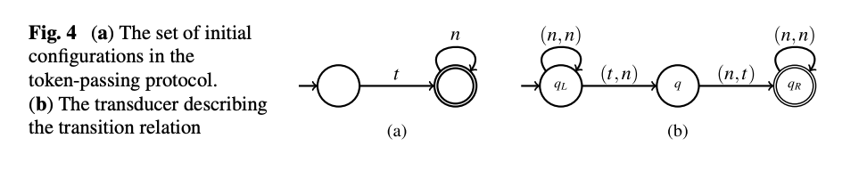
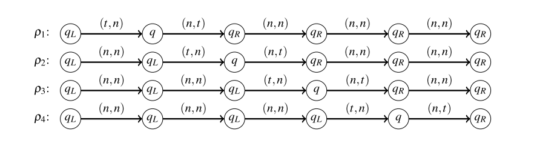
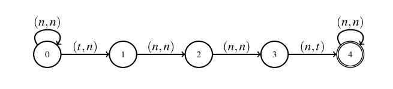
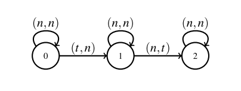
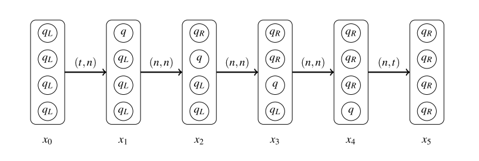
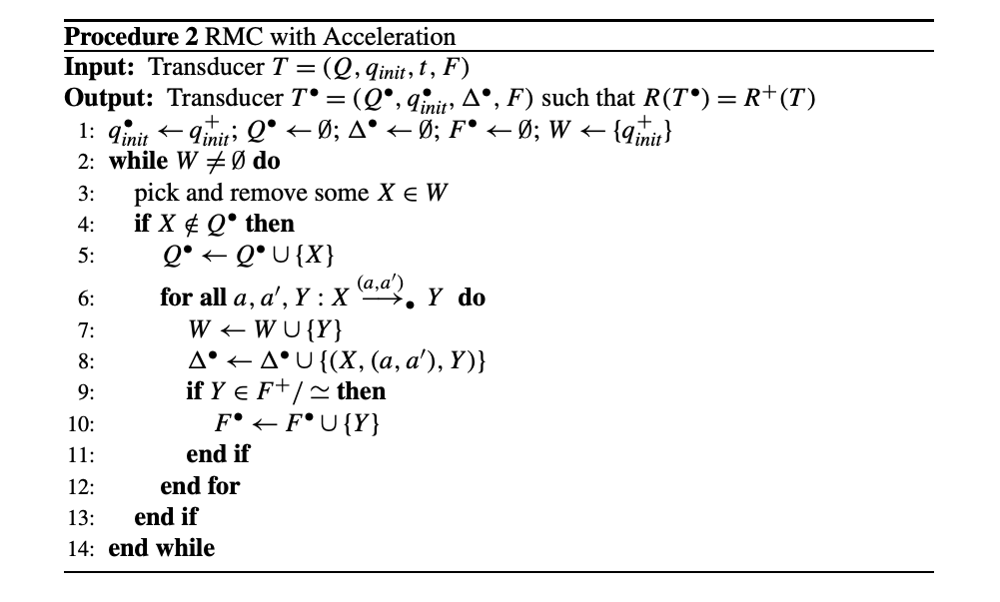
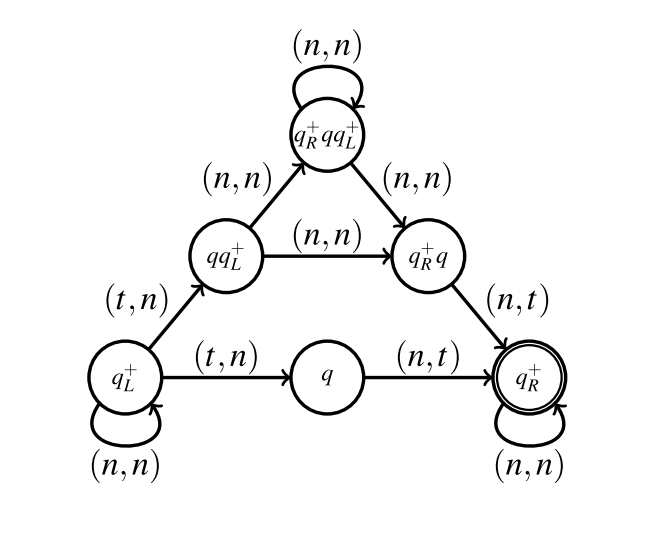
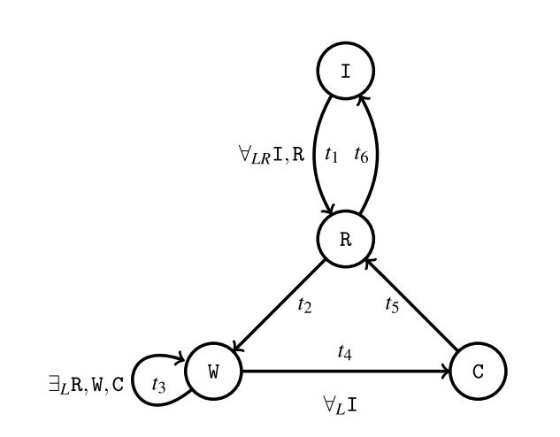

Regular Model Cheching の紹介
Parameteterized model verification
Table of Contents
1 Introduction
1.1 参考文献
Handbook of Model Checking
この本の Chapter 21: Model Checing Parameteterized Systems を紹介する
- その中でも Section 3: Regular Model Checking を中心に扱う
1.2 背景：LMNtal のモデル検査
SLIM は Model Checking が可能
- ただし，全状態を列挙しないと健全な検査はできない
- 無限の状態空間を持つモデル・パラメータの入ったモデルは
扱えない
- 無限の状態空間を持つモデル・パラメータの入ったモデルは
- 何らかの Abstraction を入れたい
LMNtal ShapeType は文脈自由の生成規則によって
生成されるモデルを検査可能
- 抽象化の仕組みを備えている
- が，まだ未知数なものも多い（性能・表現力）
1.3 （とりあえずの）方針
既存の Parameteterized Model Checking について調査し，
SLIM, LMNtal ShapeType などに応用できないか考える
- 今は調査の段階
2 Parametrized Model Checking の概要
2.1 Parametrized Model Checking とは
パラメータの入ったモデルを扱う
- N 個のプロセスが相互排他制御を行うなど
パラメータに許される全ての値について，
モデルが仕様を満たすことを検証する
- 1 個のプロセスなら OK，2 個でも OK，3 個でも OK, …
- 無限のパターンが存在する場合もある
2.2 Parametrized Moel Checking の応用分野:
- mutex のアルゴリズム
- （CPU の） bus の protocol
- Network protocol
- Cache coherence protocol
- web services
- sensor network
2.3 Parametrized Model Checking の重要なファクタ
- Components
- プロセスは有限でないかも知れない
- Topology
- システムはバラバラかも知れないし，直線状・リング・木・グラフかも知れない
- Communication primitives
- \mbox{}
randezvous （二つ以上のものが同時に書き換わる）か
shared variable の書き換えか- また，量化子 global condition が付くかも知れない
2.4 Parametrized Model Checking の簡単な例題

- (a). 一つのプロセスの状態遷移
Initial state\(\longleftrightarrow\)Critical section
- (b). Lock の状態遷移
Free\(\longleftrightarrow\)Busy
- (c). Lock と n 個のプロセス
2.5 PMC/Backward reachability
これはBackward reachability で検証可能な例題
2.6 PMC and LMNtal ShapeType
ShapeType でも検証可能なはず
- 日誌に書いて，山本さんには話した
- （でもダメだったらしい．調査が必要かも）
defshape ps {
ps :- ps, i.
ps :- lock. % まだ誰もロックを獲得していない
ps :- c. % クリティカルセクションへ入った
}
acquire @@ i, lock :- c.
release @@ c :- i, lock.
2.7 今回紹介するもの
ただし，今回はこれよりももっと難しい例題を扱える，
Regular Model Checking を紹介する
- 直線・リング状のシステムを扱える
- 遷移規則に量化子をつけることもできる
3 Regular Model Checking の導入
3.1 Regular Model Checking の概要
リングや直線状の形状をしており，
隣接したプロセス間で通信しあうシステムを検証できる
- 今回扱うのは直線状のもの
直線状のシステムでは，その位置を優先度と見做して検査可能
- 優先度付きのプロトコルの検証が可能
\hspace{1em}
RMC において safety property は決定可能ではない
- Acceleration technique などを用いることで
解けるようになる問題はある
3.2 Regular Model Checking の非形式的な定義
- それぞれのプロセスの local な state
- finite alphabet で表す
- e.g. \(\{a, b, c\}\)
- システムの構成
- word（文字列）で表す
- e.g. \(abbc\) : 一番目のプロセスは状態 \(a\)，二番目のプロセスは状態 \(b\)，…
- システムの構成の集合
- finite automata（または正規表現） で表す
- e.g. \(ab^*c\)
- 遷移 = finite-state transducer
- \mbox{}
ある状態からある状態へ遷移するか判定する
finite automata- e.g. \(abbc\) は \(abcc\) に遷移可能か？ \thusmark yes/no
3.3 関係 \(R\) に関する形式的な定義
- \(\Sigma\) は alphabet の有限集合.
- 関係 \(R \subseteq \Sigma \times \Sigma\) と集合 \(A \subseteq \Sigma\) に対して，
\(A \circ R := \{b | \exists a. (a \in A) \land ((a, b) \in R)\}\) を定義する- 要は \(A\) に含まれている状態から遷移できる状態の集合
- 関係 \(R, R' \subseteq \Sigma \times \Sigma\) に対して，合成 \(R \circ R' := \{(a_1, a_2) | \exists b. ((a_1, b) \in R) \land ((b, a_2) \in R')\}\) を定義する
- \(R^0 = \{(a, a) | a \in \Sigma\}\), \(R^{i + 1} = R^i \circ R\) と定義する
- \(R^* := \bigcup_{i \geq 0} R^i\), \(R^+ := \bigcup_{i \geq 1} R^i\)
3.4 Transducer \(T\) の形式的な定義
\(\Sigma\) 上の transducer \(T\) は
\((Q, q_{init}, \Delta, F)\) なる四つ組の有限状態オートマトン
- 有限状態
- \(Q\)
- 初期状態
- \(q_{init} \in Q\)
- 遷移関係
- \(\Delta \subseteq Q \times (\Sigma \times \Sigma) \times Q\)
- \((\Sigma \times \Sigma)\) なのは，入力に alphabet を二つ受け取って，状態遷移するから
- 受理状態
- \(F \subseteq Q\)
3.5 例題：トークンパッシング

トークン t を左から右に垂れ流すだけの例題
- 初期状態では一番左のみ
tが存在する tを一つ右にずらす遷移を認める transducer も定義
3.6 Transducer \(T\) が受理するもの
Transducer は \((\Sigma \times \Sigma)\) 上の有限長の列
\((a_1, b_1)(a_2, b_2) \dots (a_n, b_n)\) を受理する
- Transducer が受理するものを言語 \(L(T)\) と呼ぶ
- また，Transducer が受理するものを
unzipした二つの文字列は
Regular relation \(R(T)\) であると定義する- \((a_1, b_1) \dots (a_n, b_n) \in L(T)\) なら，\((a_1 \dots a_n, b_1 \dots b_n) \in R(T)\)
- システムの遷移関係を表す
3.7 例題：トークンパッシングにおける transducer

- \(\rho_1, \dots, \rho_4\)
- Transducer にそれぞれ異なる入力を与えて
走らせた結果 - わかること
- システムには …
- \((t, n)(n, t)(n, n)(n, n)(n, n)\) という遷移が許される
- \((tnnnn, ntnnn) \in R(T)\)
- \((n, n)(t, n)(n, t)(n, n)(n, n)\) という遷移も OK
- \((ntnnn, nntnn) \in R(T)\) は OK
- …
- \((t, n)(n, t)(n, n)(n, n)(n, n)\) という遷移が許される
3.8 Regular relation \(R(T)\) に関する略記法
- \((R(T))^+\) の代わりに，\(R^+(T)\) と書くことにする
- 同様に，\(R^+(T), R^*(T), R^i(T)\) と書く
3.9 例題：トークンパッシングの \(R(T)\) の推移
\((tnnnn, ntnnn), (ntnnn, nntnn), \dots, (nnntn, nnnnt) \in R(T)\)
- 従って， \((tnnnn, nnnnt) \in R^4(T)\)
4 Acceleration Techniques の導入
4.1 RMC でそもそも何をしたいのか
RMC の一般的な課題は，
Transducer relation から推移閉包を求めること
- transducer \(T\) から，\(R(T^+) = R^+(T)\) となる \(T^+\) を求めたい
要は到達可能な全ての状態への遷移を受理する
transducer が知りたい\(T^+\) さえ求まれば，到達可能な状態に
仕様を満たさないものが存在しないか（safe）が判定できる- 次ページから
4.2 RMC での Safety の検証
入力
- 初期状態
- regular set of initial configuration \(I\)
- 違反状態
- regular set of bad configuration \(B\)
- 遷移規則
- transducer \(T\)
を与えられて，
- \(I\) から \(R(T)\) を辿って， \(B\) へ到達できるパスが存在するか？
を計算する
4.3 例題：トークンパッシング
regular set of initial configuration \(I\) は
- \(t n^*\)
regular set of bad configuration \(B\) は
- \((t + n)^* t (t + n)^* t (t + n)\)
- トークンが二つ以上ある状態はエラー
4.4 RMC のフレームワークについてもう少し詳しく
RMC は
- \(Inv = I \circ R^*(T)\) を計算して
- \(Inv \cup B = \emptyset\) であるかを確認する
\(R^*(T) = \{(a, a) | a \in \Sigma\} \cup R(T^+)\) なので \(T^+\) さえ計算できれば良い
Transducer \(T\) が与えられた時に，\(R^+(T)\) は一般に計算不可能
- そもそも有限でない可能性もある
- なので，（\(R^+(T)\) ではなく）\(T^+\) を計算する手法，
Acceleration を紹介する
4.5 例題： transducer の推移

例題において，\(T^n\) は n 回トークンが右に伝わるような遷移
transducer \(T^3\) は上図のようになる
- トークンを三つ右にずらす遷移（を受理する）
- \((n^* \; tnn \; n^*, n^* \; nnt \; n^*) = R^3(T) = R(T^3)\)
4.6 例題における推移閉包

\(T^+\) はトークンが一回以上右に伝わるような全ての遷移（を受理する）
- \((n^* \; t \; n^* \; n^* , n^* \; n^* \; t \; n^*) = R^+(T) = R(T^+)\)
4.7 推移の計算
もちろん \(T^n\) を \(n = 1, 2, 3, \dots\) について
全て計算するわけにはいかない
- \(R^+(T)\) を受理する column transducer \(T^{col}\) を導入する
4.8 Column Transducer
Transducer \(T\) を与えられた時に，
- Column transducer
- \mbox{}
\(T^{col}\) は \(R^+(T)\) を受理する transducer - Quotienting
- \mbox{}
同値関係 \(\simeq\) を定めて，
同値類は代表元にまとめる（圧縮する）ことで効率化
4.9 Column Transducer の例

- これを一回走らせるだけで，
\(\rho_1, \rho_2, \rho_3, \rho_4\) をこの順番に実行した結果をシミュレートできる
\(T^{col}\) の状態は \(Q\) の要素の列であり column と呼ぶ
- 図の角丸の枠で囲んであるもの
- column が高さ i のとき，\(T^{col}\) は
\(R^i(T)\) が受理する文字列のペアを 一回実行するだけで 受理する
4.10 Column Transducer の形式的定義
Transducer \(T\) が与えられたとき， column transducer は \(T^{col} = (Q^{col}, q_{init}^{col}, \Delta^{col}, F^{col})\) の四つ組
- \(Q^{col} = Q^+\)
- \(T\) の状態の空でない列の集合
- \(q_{init}^{col} = q_{init}^+ \subseteq Q^{col}\)
- \(T\) の初期状態の空でない列の集合
- \(\Delta^{col} \subseteq Q^{col} \times (\Sigma \times \Sigma) \times Q^{col}\)
- は以下のように定義される
- for any columns \(x_1 = q_1 q_2 \dots q_m\) and \(x_2 = r_1 r_2 \dots r_m\) and a pair (\(a, a')\),
- we have \((x_1, (a, a'), x_2) \in \Delta^{col}\)
- if there exist \(a_0, a_1, \dots, a_m\) with \(a = a_0\) and \(a' = a_m\)
- such that \(q_i \overset{(a_{i - 1}, a_i)}{\longrightarrow_T} r_i\)
- for \(1 \leq i \leq m\)
5 Quotienting
5.1 Quotieting のモチベーション
Column transducer の問題は 無限の状態数を持つ 可能性があること
- Explicit に生成することはできない
- \(T^{col}\) の column \(Q^{col}\) の集合を，
合同関係 \(\simeq\) を用いて 商集合 で扱えば良さそう- これを Quotienting と呼ぶ
5.2 Left/right-copying
状態 \(q \in Q\) は以下のような場合に left-copying という
全ての次のような遷移
- \(q_{init} \overset{(a_0, a'_0)}{\longrightarrow_T} q_1 \overset{(a_1, a'_1)}{\longrightarrow_T} \dots \overset{(a_{n-1}, a'_{n-1})}{\longrightarrow_T} q_n\)
- ただし \(q_n = q\)
について，
- \(a_i = a'_i\) for all \(i \in \{0, 1, \dots, n - 1\}\)
\hspace{1em}
right-copying も同様に定義する
5.3 left/right-copying な状態の表現
要するに，left-copying の状態の prefix はただ入力を出力へコピーして流すだけ
- left-copying な状態を \(q_L\)，
- right-copying な状態を \(q_R\)，
- left/right-copying な状態の集合を \(Q^{copy}\) と表す
5.4 合同関係 \(\simeq\) の定義
こうした ただコピーするだけのもの を無視して
等価性を判定するというのが今回採用する同値関係
- 例えば， \(q_L q_L x q_R\) は \(q_L x q_R q_R\) と合同である
5.5 \(\simeq\) 上の同値類の形式的定義
\(\simeq\) 上の同値類は \(e_1 e_2 \dots e_n\) の形をした 正規表現 で表す
- ただし，\(e_i\) は以下の3つのうちのどれかの形になる
- \(q_L^+\), for some left-copying state \(q_L\)
- \(q_R^+\), for some left-copying state \(q_R\)
- \(q\), for some state \(q\) which is neither left/right-copying
- さらに，冗長な表現は許さない
- left/right copying かつ，
構文的に等しい正規表現 \(e_i\) が連続して現れるということはない
- left/right copying かつ，
もちろん well-formed になっている
- 同じもの（同値類）は同じ表現（代表元）に落ちるはず
5.6 \(\simeq\) 上の同値類の形式的定義
column \(x\) について，\([x]_\simeq\) で \(x\) の同値類を表す
- \(X, Y\), etc で column の同値類の集合（商集合）を表す
6 Quotient Transducer の導入
6.1 Quotient Transducer の概要
\(Q^{col}\) 上の同値関係 \(\simeq\) も定義できたので，
この同値関係を使って，また transducer を定義する
- 要するに， 各々の状態が正規表現である automata を構築する
6.2 Quotient Transducer の形式的定義
Quotient transducer は \(T^\bullet = (Q^\bullet, q_{init}^\bullet, \Delta^\bullet, F^\bullet)\) の四つ組
- \(Q^\bullet \subseteq Q^{col}/_{\simeq}\)
- columns の同値類の集合
- \(q_{init}^\bullet = q_{init}^+\)
- 初期状態の同値類の集合
- ただし，初期状態は left-copying だと仮定する
- \(\Delta^\bullet \subseteq Q^\bullet \times (\Sigma \times \Sigma) \times Q^\bullet\)
- 以下のように定義される遷移
- For any columns \(x,x'\) and symbols \(a,a'\),
- if \((x,(a,a'),x') \in \Delta\)
- then \(([x]_\simeq, (a, a'), [x']_\simeq) \in \Delta^\bullet\).
- \(F^\bullet = F^{col}/_\simeq\)
- 同値関係 \(\simeq\) で \(F^{col}\) を分割したもの
6.3 Quotient Transducer の生成
\(T^{col}\) ，つまり \(R^+(T)\)，と同じものを受理する transducer を生成したい
- ただし，\(T^\bullet\) が finite state transducer かはわからない
- 無限に発散するかも
- （仕方がないので） \(T^\bullet\) が
finite state であった場合には停止する手続きを考える- つまり，この手法は 完全ではない （アルゴリズムではない）
6.4 前提とする定義：演算子
- 状態 \(q \in Q\) に対して \(q^\oplus\) を以下のように定義する
- \(q \in Q^{copy}\) なら \(q^\oplus := q^+\)
- \(q \in Q^{copy}\) でないなら \(q^\oplus := q\)
- 演算子 \(\star\) を以下のように同値類の結合と定義する
- \([x]_\simeq \star [y]_\simeq = [x \cdot y]_\simeq\)
- ただし， \( \cdot \) は column を結合する演算子
- より正確な定義は次ページ
あとで例も出します
6.5 \(\star\) の正確な定義
2 に関してもっと正確には
- colum の同値類を正規表現 \(e_1 \dots e_n\), \(f_1 \dots f_m\) で表現したとき
- \((e_1 \dots e_n) \star (f_1 \dots f_m)\) は
- \(e_n, f_1\) が両方とも left/right-copying な状態 \(q\) の \(q^+\) と等しい場合は， \(e_1 \dots e_n \cdot f_2 \dots f_m\)
- そうではない場合は \(e_1 \dots e_n \cdot f_1 \dots f_m\)
あとで例も出します
6.6 Quotient transducer の遷移規則
同値類の集合 \(X, Y\) について，以下のどちらか満たすとき， \(X \overset{(a, b)}{\longrightarrow_\bullet} Y\) と帰納的に定義する
- \(x \overset{(a, a')}{\longrightarrow_T} y\), \(X = x^\oplus\) かつ \(Y = y^\oplus\)
- \(X = X_1 \star X_2\), \(Y = Y_1 \star Y_2\), \(X \overset{(a, b)}{\longrightarrow_\bullet} X\) かつ \(Y \overset{(b, a')}{\longrightarrow_\bullet} Y\)
あとで例も出します
6.7 例題：トークンパッシング
- \(q_L^+ \overset{(t, n)}{\longrightarrow_T} q\) から \(q_L^\oplus \overset{(t, n)}{\longrightarrow_T} q^\oplus\) なので \(q_L^+ \overset{(t, n)}{\longrightarrow_\bullet} q\)
- \(q_L^+ \overset{(n, n)}{\longrightarrow_T} q_L^+\) から \(q^\oplus \overset{(n, n)}{\longrightarrow_T} q^\oplus\) なので \(q_L^+ \overset{(n, n)}{\longrightarrow_\bullet} q_L^+\)
6.8 例題：トークンパッシング
- \(\underbrace{q_L^+ \overset{(t, n)}{\longrightarrow_\bullet} q}_{\hspace{0.3em}\circled{1}}\) と
\(\underbrace{q_L^+ \overset{(n,n)}{\longrightarrow_\bullet} q_L^+}_{\hspace{0.3em}\circled{2}}\)
から
\(q_L^+ \star q_L^+ \overset{(t, n)}{\longrightarrow_\bullet} q \star q_L^+ \) なので
\(q_L^+ \overset{(t, n)}{\longrightarrow_\bullet} q q_L^+ \)
7 Quotient Transducer の生成手続き
7.1 Quotient Transducer の生成手続き

\footnotesize
- W はまだ遷移先を計算していない状態の同値類（= 正規表現）の集合
- \footnotesize W が空になったら計算終了
- \footnotesize
W が空になるまで状態の同値類をポップして，
\(\longrightarrow_\bullet\) の先にあるものを追加していく
7.2 Quotient Transducer の生成手続きの適用例
- まずは初期状態 \(q_L^+\) を W に追加
- W から \(q_L^+\) を選択.
- \(q_L^+ \overset{(t,n)}{\longrightarrow_\bullet} q\) なので, \(q\) を W に追加, また， \((q_L^+, (t, n), q)\) を \(\Delta^\bullet\).
- \(q_L^+ \overset{(t, n)}{\longrightarrow_\bullet} q\) と
\(q_L^+ \overset{(n,n)}{\longrightarrow_\bullet} q_L^+\)
から
\(q_L^+ \overset{(t, n)}{\longrightarrow_\bullet} q q_L^+ \) なので前に紹介した例題を参照
\(q q_L^+\) を W に追加, \((q_L^+ \overset{(t, n)}{\longrightarrow_\bullet} q q_L^+)\) を \(\Delta^\bullet\) に追加.
- W から \(q\) を選択.
- \(q \overset{(n,t)}{\longrightarrow_\bullet} q_R^+\) なので \(q_R^+\) を W に追加, \((q, \overset{(n, t)}{\longrightarrow_\bullet}, q_R^+)\) を \(\Delta^\bullet\) に追加.
- \(q_R^+ \in F/_\simeq\) なので \(q_R^+\) を \(F^\bullet\) に追加
- …
7.3 Quotient Transducer の生成手続きの適用結果

- この transducer は \((n, n)^* (t, n) (n, n)^* (n, t) (n, n)^*\) を受理する
- 正規表現の包含関係を計算するのは簡単にできるので， safety の検証， \((I \odot R^*(T)) \cup B = \emptyset\) かどうかの確認，はすぐにできる
8 Monotomic Abstraction
8.1 Monotomic Abstraction とは
推移閉包を正確に計算することが難しい場合は
over approximation を行う
- 次に紹介する例では，
wqo を適用できるように過大近似して検証している- Backward reachability などが適用できる
- もちろん false positive はありうる
今回は例題を見せるだけで手法は紹介しません
8.2 量化子付きの RMC
全称量化付きの遷移規則を持つシステムの RMC を
直接行うのは難しい
- 全称量化子のことを（若干）無視して検証する
- 余計に遷移してしまうかもしれないので完全ではない
- ただし，健全ではある
8.3 例題：量化子付きの Mutex

- I
- 初期状態
- R
- mutex 操作をするリクエスト．
- 自分以外に I, R でないプロセスがいるなら I \(\longrightarrow\) R に遷移しない
- W
- mutex 操作をする前にもっと優先度の高いプロセスが操作しようとしていたら待ち続ける
- C
- クリティカルセクション
8.4 例題：量化子付きの Mutex
全てのプロセスが直線状につながっているという前提
この中の位置がプロセスの優先度に対応している
- 先頭に近いほど優先度が高い
例：
- \(\exists_{L} P\)
- 自分より左側に x があるなら，つまり自分よりも優先度の高いプロセスがいるなら，遷移する
- \(\forall_{LR} P\)
- 自分より左側と右側が全て P であるなら，つまり，自分以外が全て P なら遷移する
9 量化子付きの遷移を含む例題の ShapeType エンコード
9.1 量化子付きの遷移を含む例題の ShapeType エンコード
LMNtal ShapeType は文脈自由よりも遥かに 強力な文法を扱える
- （少なくとも見た目だけは） RMC の完全上位互換 のように見える
量化子のついていない例題が （解けるかはともかく）ShapeType へエンコードできることはほとんど明らか
- 量化子のついた例題に関してどうかは，あまり議論されていないように見える
- （直線状・リング状の例題に関しては量化子付き書き換え規則の完全上位互換である） CSLMNtal の導入もまだ始めていない
量化子のついている例題はどうか？
- 多分エンコードはできる
9.2 存在量化子付きの遷移を含む例題の ShapeType エンコード
存在量化子は自明
- RMC では
- \mbox{}
隣接したプロセスでない プロセスの存在は 存在量化子をつける必要があった - LMNtal (ShapeType) では
- \mbox{}
そもそも非連結グラフも扱うことができる（たぶん）
9.3 全称量化子付きの遷移を含む例題の ShapeType エンコード
全称量化子はそんなに自明でない？
- 「何かが無い場合に遷移する」という規則は直接は書けないが …
関数的アトムを用いて
- ルールは事前に全称量化の条件をチェックしてから遷移する
- 型の生成規則に全称量化のチェックを行うアトムも含める
9.4 簡略化したプロトコル
- n 個のプロセスがある
それぞれのプロセスは
- i
- 初期状態
- r
- リクエスト
- c
- クリティカルセクション
の三つの状態をとる
- i \(\longrightarrow\) r は c なプロセスがいないなら遷移可能
- r \(\longrightarrow\) c は，
他にもっと優先度の高いプロセスが r, c でないなら遷移可能
同時に二つ以上 c になるものがないか？ を検証する
9.5 全称量化付き ShapeType：システムの遷移規則
\footnotesize
% r は左側が全て i ならクリティカルセクションへ遷移可能 aquire @@ H = forallL_I([r | T]) :- H = [r | T]. % クリティカルセクションを離れる leave @@ H = [c | T] :- H = [i | T]. % 他に誰もクリティカルセクションに入っていないのなら，i は r になって良い H = forallL_IL([i | forallR_IR(T)]) :- H = [r | T].
9.6 全称量化付き ShapeType：システムの生成規則
\tiny
defshape ps {
ps :- head(<i*>).
H = <i*> :- H = [i | <i*>].
H = <i*> :- H = forallL_I(<i*>).
H = <i*> :- H = <(i|r)*>.
H = <(i|r)*> :- H = [i | <(i|r)*>]. % 削れるかも
H = <(i|r)*> :- H = [r | <(i|r)*>].
H = <(i|r)*> :- forallL_IR(<(i|r)*>).
H = <(i|r)*> :- H = <(i|r)*c?>.
H = <(i|r)*c?> :- H = [i | <(i|r)*c?>]. % 削れるかも
H = <(i|r)*c?> :- H = [r | <(i|r)*c?>]. % 削れるかも
H = <(i|r)*c?> :- H = [c | <(i|r)*c?(i|r)*>]. % cs に入るのは一つ
H = <(i|r)*c?> :- H = <(i|r)*c?(i|r)*>.
H = <(i|r)*c?(i|r)*> :- H = [i | <(i|r)*c?(i|r)*>].
H = <(i|r)*c?(i|r)*> :- H = [r | <(i|r)*c?(i|r)*>].
H = <(i|r)*c?(i|r)*> :- H = forallR_IR(<(i|r)*c?(i|r)*>]).
H = <(i|r)*c?(i|r)*> :- H = nil.
}
9.7 全称量化付き ShapeType
例題の感想
- （文法的に）あっているのかもよくわからない
- TODO: 山本さんに相談
とはいえ，（RMC で出てくる例題レベルでは）
全称量化子も文法上はエンコードできる（ようだ）
10 まとめ
10.1 まとめ
RMC の手法がそのまま LMNtal に適用できるとはあまり思えないが
transducer という概念は重要だと思う
- 何で抽象化するか ということそのものなので
- RMC では finite state automata = regular expression だった
- GTS の CEGAR では（たぶん）ペトリネットだった
- LMNtal ShapeType では LMNtal rule が
transducer になっているのかもしれない （わからないが）
ShapeType は表現力的には超強力だということが理解できた
- 量化子も（解けるかはわからないが）扱えそう
- ただ，どの程度効率的に解けるのかとかはわからない
10.2 参考文献
Handbook of Model Checking